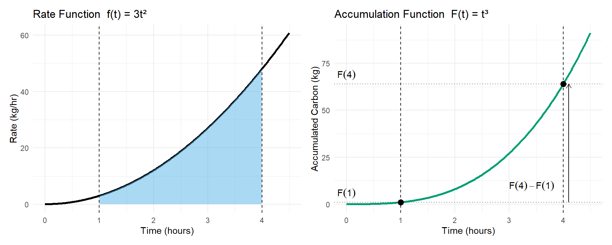

Chapter 4 Definite Integrals and the Fundamental Theorem of Calculus
A flux tower stands above a stand of Douglas-fir, logging CO₂ exchange between the forest and the atmosphere every half-hour. In the dark of early morning, the forest is a net carbon source — respiration outpaces photosynthesis, and the readings come back negative. By mid-morning the readings have flipped: photosynthesis dominates, and the canopy is pulling carbon down. The numbers on the screen change every thirty minutes for sixteen hours straight.
Somewhere in that ledger is the answer to a question your funder cares about: did this stand of trees gain or lose carbon today, and by how much? To get there you need a way to take a whole day’s worth of rates — positive and negative, fast and slow, smooth and gusty — and condense them into a single signed total. That number is a definite integral. This chapter is about how to define one, how to interpret one, and how to compute one efficiently.
4.1 Purpose of the Chapter
In the previous chapter, you developed an intuition for accumulation by approximating totals from rates using rectangles, tables, and graphs. You saw how adding up many small contributions can represent meaningful environmental quantities such as total rainfall, streamflow, carbon exchange, or pollutant transport. You also encountered the idea of signed accumulation, where gains and losses can offset each other over time.
This chapter formalizes those ideas.
Here, we move from “adding rectangles makes sense” to “integrals are well-defined mathematical objects with powerful and reliable properties.” You will learn how mathematicians define accumulation precisely, why different approximation methods converge to the same value, and how integrals connect directly back to derivatives through one of the most important results in calculus.
Rather than treating integrals as a new collection of formulas, this chapter emphasizes meaning first. Computation matters, but it is grounded in interpretation: what a definite integral represents, how it behaves, and why it works.
By the end of this chapter, you should clearly understand:
- what a definite integral is and how it arises from limits of Riemann sums,
- why a definite integral represents accumulation, not just area,
- how integration and differentiation are connected, and why they are inverse ideas,
- how to compute definite integrals efficiently and correctly, while still interpreting results in context.
This chapter provides the conceptual foundation for everything that follows in Calculus II. Once the meaning of the definite integral is solid, later topics—techniques of integration, applications, and differential equations—become questions of method rather than mystery.
4.2 From Riemann Sums to Definite Integrals
In the previous chapter, you learned how to approximate accumulation by adding up rectangles under a rate curve. These approximations—left, right, midpoint, and trapezoidal—allowed you to estimate totals from discrete measurements and to reason carefully about overestimates, underestimates, and conservativeness.
In this section, we take the next conceptual step:
why all of these approximations are pointing toward the same value, and how that value becomes the definite integral.
The key idea is that Riemann sums are not the goal—they are a process. The definite integral is what emerges when that process is carried out with infinitely fine resolution.
4.2.1 Riemann Sums as Structured Approximations
A Riemann sum is a structured way to approximate accumulation. It is not a random guess; it follows a clear set of steps:
- Divide an interval \([a,b]\) into subintervals.
- Choose a representative rate within each subinterval.
- Multiply rate by width to estimate accumulation over that slice.
- Add the contributions from all slices.
Each choice—how many slices to use, how wide they are, and where the rate is sampled—represents an assumption about how the system behaves between measurements.
This is exactly how environmental data are often handled in practice:
- we measure at discrete times or locations
- assume behavior between those measurements and
- sum contributions to estimate a total
4.2.2 Partitioning an Interval
The first step in any Riemann sum is partitioning the interval \([a,b]\).
A partition divides the interval into \(n\) subintervals: \[ a = x_0 < x_1 < x_2 < \cdots < x_n = b. \]
When the partition is uniform (all subintervals the same width), each slice has width \[ \Delta x = \frac{b - a}{n}. \]
Conceptually:
- Smaller \(\Delta x\) means finer resolution.
- Larger \(n\) means more detailed sampling.
4.2.3 Width \(\Delta x\) and Resolution
The quantity \(\Delta x\) represents the resolution of our approximation.
- In time-based problems, \(\Delta x\) might represent minutes or hours between measurements.
- In space-based problems, it might represent distance between sampling locations.
- In environmental monitoring, smaller \(\Delta x\) usually corresponds to higher-frequency sensors or denser spatial sampling.
As \(\Delta x\) gets smaller:
- Each rectangle covers a shorter interval.
- The assumption that the rate is “approximately constant” over that interval becomes more reasonable.
- Approximation error decreases.
4.2.4 Sample Points: Left, Right, and Midpoint
Once the interval is partitioned, we must choose where to sample the rate within each subinterval.
For the \(i\)-th subinterval \([x_{i-1}, x_i]\), we choose a sample point \(x_i^*\).
Common choices include:
- Left endpoint: \(x_i^* = x_{i-1}\)
- Right endpoint: \(x_i^* = x_i\)
- Midpoint: \(x_i^* = \tfrac{x_{i-1} + x_i}{2}\)
Each choice reflects a modeling assumption:
- Left sums assume the rate at the start represents the whole interval.
- Right sums assume the rate has already changed to its later value.
- Midpoint sums assume the rate halfway through is most representative.
Importantly, these choices do not define different integrals. They are simply different approximations of the same accumulated quantity.
4.2.5 From Finite Sums to a Limit
A Riemann sum with \(n\) subintervals has the general form: \[ \sum_{i=1}^{n} f(x_i^*)\,\Delta x. \]
This expression represents:
- a finite number of rectangles,
- each contributing a small amount to the total,
- added together to approximate accumulation.
Now imagine increasing \(n\):
- The rectangles become thinner.
- Differences between left, right, and midpoint sampling shrink.
- The total becomes less sensitive to how the sample points are chosen.
This leads to a crucial observation:
As \(\Delta x \to 0\), all reasonable Riemann sums approach the same value.
4.2.6 Why Different Sums Converge to the Same Value
For smooth functions (which model most physical and environmental rates):
- Over very small intervals, the function does not change much.
- Left, right, and midpoint values become nearly identical.
- Rectangles begin to “hug” the curve regardless of sampling choice.
This is why:
- Left sums may start below the curve and right sums above it,
- but as the rectangles get narrower, both collapse toward the same total area.
The definite integral is defined as this common limiting value.
4.2.7 Defining the Definite Integral
We now formalize accumulation using a limit.
The definite integral of \(f(x)\) from \(a\) to \(b\) is defined as: \[ \int_a^b f(x)\,dx = \lim_{n \to \infty} \sum_{i=1}^{n} f(x_i^*)\,\Delta x, \] provided this limit exists.

This definition captures several ideas at once:
- Accumulation is the result of adding infinitely many infinitesimal contributions.
- The exact value does not depend on how we sampled the rate, as long as the sampling is reasonable.
- The integral represents the idealized total we would obtain with perfect resolution.
4.2.8 Conceptual Meaning Over Formal Notation
At this stage, the symbols matter less than the ideas they encode.
The expression \[ \int_a^b f(x)\,dx \] should be read as:
“The total accumulated effect of the rate \(f(x)\) as \(x\) runs from \(a\) to \(b\).”
It is not merely an area formula, and it is not just a new symbol to manipulate. It is a precise way of expressing accumulation that you have already been reasoning about intuitively.
4.2.9 Environmental Framing: Why Resolution Matters
In environmental science, data are almost always discrete:
- streamflow measured hourly,
- pollutant concentrations sampled weekly,
- satellite images taken every few days.
But the processes themselves are continuous.
Riemann sums model how we estimate continuous processes from discrete data. The definite integral represents what we would obtain with infinitely fine measurement resolution.
This framing explains why:
- higher-frequency measurements improve estimates,
- coarse sampling can miss peaks or rapid changes,
- and different estimation methods converge as resolution increases.
4.2.10 Continuous vs. Discrete Data
Riemann sums live at the interface between:
- discrete measurements (what we observe), and
- continuous processes (what we model).
The definite integral represents the continuous ideal that discrete approximations aim to approach.
Understanding this transition is essential for interpreting environmental data responsibly and for recognizing both the power and the limitations of real-world measurements.
4.2.11 Key Takeaway
Riemann sums are not competing formulas—they are stepping stones.
By refining partitions and shrinking \(\Delta x\), all reasonable approximations converge to the same accumulated total. That limiting value is the definite integral, which provides a precise, reliable, and meaningful way to describe accumulation in natural systems.
Concept Check: Riemann Sums as a Process
Why are Riemann sums described as a process rather than a final answer?
Click to reveal answer
Riemann sums are a method for approximating accumulation using finitely many rectangles — they show how accumulation is built piece by piece. The definite integral is the value that emerges when this construction is carried out with infinitely fine resolution. Riemann sums are the recipe; the integral is the dish.
Concept Check: What Shrinking Δx Really Means
What does shrinking \(\Delta x\) represent conceptually in an environmental context?
Click to reveal answer
Shrinking \(\Delta x\) represents increasing measurement resolution — sampling more frequently in time (every 5 minutes instead of every hour) or more densely in space (every meter instead of every kilometer). It reflects a closer approximation of a continuous environmental process using discrete data.
Concept Check: Why L/R/Mid Converge to the Same Value
Why do left, right, and midpoint Riemann sums converge to the same value for smooth functions?
Click to reveal answer
For smooth functions, the rate changes very little over sufficiently small intervals. As \(\Delta x \to 0\), the differences between left, right, and midpoint samples vanish, so all reasonable sums approach the same accumulated total.
Concept Check: The Rectangle Assumption
What assumption about the system is made when using rectangles to approximate accumulation?
Click to reveal answer
Each rectangle assumes the rate is approximately constant over its subinterval. Smaller rectangles make this assumption more reasonable, which is why refinement (more, narrower rectangles) improves accuracy.
Concept Check: Formalizing the Riemann Sum
How does a definite integral formalize the idea behind Riemann sums?
Click to reveal answer
A definite integral is defined as the limit of Riemann sums as subinterval widths approach zero. It captures exactly what the sums approximate — the precise accumulated total — without depending on any particular choice of partition or sample point.
Concept Check: Riemann Sums as Environmental Modeling
In what sense is a Riemann sum an environmental modeling tool?
Click to reveal answer
Riemann sums mirror how environmental data are actually used: discrete sensor readings (rainfall every 15 minutes, flow measurements every hour, chamber measurements every half-hour) stand in for continuous behavior between observations, and contributions are summed to estimate totals.
Concept Check: Why Sampling Choice Doesn’t Matter in the Limit
Why does the definite integral not depend on whether you sample with left, right, or midpoint?
Click to reveal answer
As partitions become finer, the differences between sampling choices disappear. Each sample point is approximating the same rate over a vanishingly small slice. All reasonable approximations converge to the same value.
Concept Check: The Role of the Limit
What conceptual role does the limit play in connecting Riemann sums to integrals?
Click to reveal answer
The limit removes dependence on arbitrary choices — rectangle width, sample location, partition style. What remains is an idealized accumulated total: the value every reasonable approximation is creeping toward.
4.3 Interpreting the Definite Integral
Up to this point, we have focused on how definite integrals are defined and how they arise from increasingly refined approximations. In this section, we shift emphasis from how integrals are constructed to what integrals mean. The goal is to develop a habit of interpretation so that every computed integral is understood as a statement about a real system, not just a numerical result.
A definite integral is a tool for describing total change. That change may represent growth or loss, input or output, gain or depletion. Understanding which of these is being measured—and why—depends on careful attention to meaning, units, and sign.
4.3.1 Definite Integrals as Net Accumulation
At its core, a definite integral measures net accumulation over an interval.
If \(f(t)\) is a rate of change, then \[ \int_a^b f(t)\,dt \] represents the total effect of that rate as time runs from \(a\) to \(b\).
“Net” is the key word:
- Positive values of \(f(t)\) contribute to an increase.
- Negative values of \(f(t)\) contribute to a decrease.
- The integral combines both effects into a single number.
This is why integrals are well suited to modeling systems with competing processes, such as input and removal, growth and decay, or uptake and release.
4.3.2 Signed Area and Physical Meaning
Graphically, a definite integral is often described as the area under a curve. However, this description can be misleading if taken too literally.

A more accurate statement is:
A definite integral is the signed area between the curve and the horizontal axis.
- Area above the axis contributes positively.
- Area below the axis contributes negatively.
This sign convention reflects physical reality:
- A positive rate increases the accumulated quantity.
- A negative rate decreases it.
The sign is not an error or a technicality—it is essential information about the direction of change.
4.3.3 Total Change from a Rate
Many environmental variables are naturally expressed as rates:
- carbon flux (kg C/hr),
- streamflow (m³/s),
- pollutant loading (kg/day),
- energy exchange (W/m²),
- population growth (individuals/year).
In each case, the definite integral converts a rate into a total change over a specified interval.
Conceptually: \[ \text{total change} = \int (\text{rate}) \times (\text{time or space}) \]
This mirrors the familiar calculation \[ \text{amount} = \text{rate} \times \text{time}, \] but allows the rate to vary continuously rather than remain constant.
4.3.4 Units Analysis: Why Units Matter
Units provide one of the most reliable checks on interpretation.
When computing a definite integral, the units of the result come from: \[ (\text{units of } f) \times (\text{units of the variable}) \]
For example:
- \(\text{kg/hr} \times \text{hr} = \text{kg}\)
- \(\text{m}^3/\text{s} \times \text{s} = \text{m}^3\)
- \(\mu\text{mol}/(\text{m}^2\cdot\text{s}) \times \text{s} = \mu\text{mol}/\text{m}^2\)
If the resulting units do not make sense for the quantity being measured, something has gone wrong—either in setup or interpretation.
4.3.5 Positive and Negative Contributions
In many systems, positive and negative contributions occur within the same interval.
Examples include:
- carbon uptake during daylight and release at night,
- stream inflow during storms and outflow during dry periods,
- population growth during favorable seasons and decline during harsh ones.
The definite integral automatically accounts for all contributions and reports their combined effect.
This makes integrals especially powerful for systems where opposing processes operate simultaneously or cyclically.
4.3.6 Net Accumulation vs. Total Accumulation
It is important to distinguish between:
- Net accumulation:
The signed result of the integral, which reflects the overall change. - Total accumulation:
The sum of magnitudes of all positive contributions (often computed by separating regions).
A net value of zero does not imply that nothing happened. It only means that gains and losses balanced over the interval.
Understanding this distinction is essential for correct interpretation in environmental contexts.
4.3.7 Common Pitfalls
Several conceptual errors arise frequently when interpreting definite integrals.
Confusing height with area
The value of the function \(f(x)\) at a point is a rate, not an amount. Only after integrating over an interval does it represent a total.
Ignoring sign
Treating all areas as positive removes crucial information about whether the system gained or lost quantity.
Misinterpreting zero net accumulation
A result of zero often indicates strong internal dynamics rather than inactivity.
Recognizing and avoiding these pitfalls leads to more accurate modeling and interpretation.
4.3.8 Environmental Framing
Definite integrals appear throughout environmental science because they naturally describe systems governed by rates.
Carbon fluxes
Integrals of net ecosystem exchange quantify total carbon gain or loss over days, seasons, or years.
Pollutant loading
Integrating pollutant concentration multiplied by flow reveals total mass transported into or out of a system.
Energy exchange
Integrals of heat flux quantify cumulative energy gain or loss across surfaces or through time.
Population balance
Integrating growth rates shows how populations change when births, deaths, immigration, and emigration compete.
In each case, the integral captures what actually happened over time, not just instantaneous conditions.
4.3.9 Key Takeaway
A definite integral is not just a computational tool. It is a statement about a system.
It tells you how much accumulated, in which direction, and over what interval. Interpreting that statement—by attending to sign, units, and context—is as important as computing the number itself.
Concept Check: Accumulation, Not Just Area
Why is a definite integral better interpreted as accumulation rather than area?
Click to reveal answer
A definite integral represents total accumulated change from a rate, including sign and units. “Area” is a helpful visualization (it’s literally what you see under the curve), but “accumulation” captures the physical meaning — kg of carbon exchanged, liters of water passed, individuals added.
Concept Check: What the Sign of an Integral Tells You
What does the sign of a definite integral tell you about a system?
Click to reveal answer
The sign indicates the direction of net change. Positive means the quantity gained on net (water arrived, carbon was fixed), negative means it lost (water evaporated, carbon was respired), and zero means gains and losses balanced over the interval.
Concept Check: Zero Net Doesn’t Mean Nothing Happened
Why does a zero net integral not imply that “nothing happened”?
Click to reveal answer
A net value of zero means positive and negative contributions canceled. Significant gains and losses may still have occurred internally — a forest that fixed 80 kg C during the day and respired 80 kg C overnight has zero net flux, but a lot happened.
Concept Check: Units as a Sanity Check
How do units help verify the interpretation of a definite integral?
Click to reveal answer
Units of an integral come from multiplying the rate’s units by the variable’s units. If the resulting units don’t match the physical quantity you’re claiming to compute, your setup or interpretation is wrong. “mg C / m² / hr × hr = mg C / m²” makes sense; “mg C / m² × hr” doesn’t and signals a problem.
Concept Check: Why ‘Area Under the Curve’ Falls Short
Why is the phrase “area under the curve” incomplete without the Riemann-sum perspective?
Click to reveal answer
Without Riemann sums, area seems purely geometric — disconnected from physical meaning. The Riemann-sum perspective reveals that the area comes from adding rate × width contributions, which is why the result has units and a sign, and why it represents something real.
4.4 How to Evaluate a Definite Integral
Before discussing rules that simplify integrals, it is important to understand what it means to evaluate a definite integral.
A definite integral, \[ \int_a^b f(x)\,dx, \] represents the net accumulation of the quantity \(f(x)\) over the interval \([a,b]\). Evaluating the integral means computing that total accumulation.
4.4.1 Step 1: Find an antiderivative
To evaluate a definite integral, first find a function \(F(x)\) whose derivative is \(f(x)\): \[ F'(x) = f(x). \]
Such a function \(F\) is called an antiderivative of \(f\).
Examples: - If \(f(x) = x^2\), then \(F(x) = \tfrac{x^3}{3}\) - If \(f(x) = e^x\), then \(F(x) = e^x\) - If \(f(x) = \cos x\), then \(F(x) = \sin x\)
At this stage, we do not include a constant of integration.
4.4.2 Step 2: Evaluate the antiderivative at the bounds
Once an antiderivative \(F(x)\) is found, evaluate it at the upper and lower limits of integration: \[ F(b) \quad \text{and} \quad F(a). \]
These values represent the accumulated quantity up to \(x=b\) and up to \(x=a\), respectively.
4.4.3 Step 3: Subtract to find the net accumulation
The value of the definite integral is the difference between these two accumulated amounts: \[ \int_a^b f(x)\,dx = F(b) - F(a). \]
This subtraction reflects the idea that a definite integral measures change over an interval, not an absolute amount at a single point.
4.4.4 Step 4: Why there is no constant of integration
If a constant \(C\) were included in the antiderivative, it would appear in both evaluations: \[ (F(b) + C) - (F(a) + C) = F(b) - F(a). \]
The constant cancels automatically. This is why definite integrals do not require a constant of integration, unlike indefinite integrals.
4.4.5 A simple numerical example
Evaluate \[ \int_1^4 x^2\,dx. \]
Antiderivative: \[ F(x) = \tfrac{x^3}{3} \]
Evaluate at the bounds: \[ F(4) = \tfrac{64}{3}, \qquad F(1) = \tfrac{1}{3} \]
Subtract: \[ \int_1^4 x^2\,dx = \tfrac{64}{3} - \tfrac{1}{3} = \tfrac{63}{3} = 21 \]
4.4.6 Key idea moving forward
Evaluating a definite integral always follows the same pattern:
- Find an antiderivative
- Evaluate at the bounds
- Subtract
The rules introduced next (such as linearity) help make this process faster and more flexible—but they all rest on this core idea of accumulation and difference.
Concept Check: When Rate × Time Actually Works
Why does integrating a constant rate reduce to “rate × duration”?
Click to reveal answer
If the rate is constant, every small contribution is the same. Adding them up over the interval is equivalent to multiplying the rate by the interval length — there’s no variation to track. The general integral collapses to the elementary-school formula because there’s nothing to integrate.
Concept Check: Why the Constant of Integration Doesn’t Matter Here
Why does the constant of integration not affect a definite integral?
Click to reveal answer
A definite integral measures change between two points. When you compute \(F(b) - F(a)\), the same constant \(C\) appears in both terms and cancels — leaving the actual change.
Concept Check: What F(b) − F(a) Really Means
What does \(F(b) - F(a)\) represent conceptually?
Click to reveal answer
It represents the net change in the accumulated quantity between \(a\) and \(b\) — not the value at either point alone. \(F(a)\) is the cumulative total up to \(a\); \(F(b)\) is the cumulative total up to \(b\); subtracting gives the amount accumulated between them.
Concept Check: Why We Trust Integrals When Data Are Discrete
Why can definite integrals be trusted even when real environmental data come in discrete chunks?
Click to reveal answer
Riemann sums show how discrete measurements approximate continuous accumulation. The definite integral represents the continuous benchmark that those approximations approach — so even when you only have data every 15 minutes, the integral gives you a defensible idealized total to aim for.
4.5 Properties of Definite Integrals
Up to this point, we have focused on what a definite integral represents: accumulation, signed area, and net change from a rate. We now turn to an equally important question:
How do definite integrals behave?
Definite integrals obey a small set of powerful properties that allow us to simplify calculations, combine information, and interpret results more clearly. These properties are not arbitrary rules—they reflect the underlying logic of accumulation and signed area.
Understanding these properties will help you:
- compute integrals more efficiently,
- break complex problems into manageable pieces,
- and reason about environmental systems without always relying on formulas.
4.5.1 Linearity of the Integral
One of the most important properties of definite integrals is linearity. Linearity tells us that integration distributes over addition and scaling.
4.5.1.1 Adding Rates
If two rate functions \(f(x)\) and \(g(x)\) describe independent processes occurring over the same interval \([a,b]\), then their combined accumulation is simply the sum of their individual accumulations:
\[ \int_a^b [f(x) + g(x)]\,dx = \int_a^b f(x)\,dx + \int_a^b g(x)\,dx. \]

Conceptual meaning:
Adding rates adds their contributions at every moment. Because accumulation is built from adding many small pieces, we are free to add those pieces before or after integrating.
Environmental example:
- \(f(x)\): carbon uptake by photosynthesis
- \(g(x)\): carbon release by respiration
The integral of \(f(x)+g(x)\) gives net ecosystem carbon exchange, while integrating them separately allows us to examine each process individually.
4.5.1.2 Scaling a Rate
If a rate is multiplied by a constant factor \(c\), the total accumulation is also multiplied by that factor:
\[ \int_a^b c f(x)\,dx = c \int_a^b f(x)\,dx. \]
Conceptual meaning:
If every small contribution is scaled by the same amount, the total accumulation scales in the same way.
Environmental example:
- Doubling pollutant concentration at all times doubles the total pollutant load.
- Converting units (e.g., from mg to g) simply rescales the integral.
4.5.2 Additivity Over Intervals
Definite integrals can be broken into pieces. If \(c\) lies between \(a\) and \(b\), then
\[ \int_a^b f(x)\,dx = \int_a^c f(x)\,dx + \int_c^b f(x)\,dx. \]

Conceptual meaning:
Accumulation over a long interval is just the sum of accumulations over shorter subintervals.
This property formalizes what you already do intuitively when you:
- add hourly streamflow to get daily discharge,
- add daily carbon uptake to get seasonal totals,
- or sum storm-by-storm nutrient export to estimate annual load.
Environmental example:
Breaking a year into seasons allows you to analyze how much accumulation occurs during wet vs. dry periods without changing the total.
4.5.3 Reversing the Limits of Integration
The direction of integration matters. Reversing the limits of integration changes the sign of the result:
\[ \int_a^b f(x)\,dx = - \int_b^a f(x)\,dx. \]
Conceptual meaning:
Integrating “backwards” reverses the direction of accumulation. Because integrals track net change, direction carries information.
This property reinforces an important idea:
The sign of an integral is not optional—it encodes direction.
Environmental example:
- Integrating forward in time gives net gain or loss.
- Integrating backward in time reverses the sign, reflecting reversal of the process.
4.5.4 Integrals of Constant Functions
If the rate is constant, integration reduces to a familiar calculation:
\[ \int_a^b c\,dx = c(b - a). \]
Conceptual meaning:
When nothing changes, accumulation is simply
\[
\text{rate} \times \text{duration}.
\]
This case anchors the integral to everyday reasoning and helps validate more complex results.
Environmental example:
- Constant streamflow over a fixed time interval
- Constant heat flux over a period of stable conditions
4.5.5 Why These Properties Matter
These properties are not just mathematical conveniences—they shape how we think about accumulation.
They allow us to:
- Simplify calculations by breaking problems apart,
- Check results for consistency and reasonableness,
- Interpret models in terms of real processes,
- and scale up from small measurements to large conclusions.
Just as importantly, these properties prepare us for:
- the Fundamental Theorem of Calculus,
- integration techniques,
- and more advanced modeling of environmental systems.
By mastering these behaviors now, you build a toolkit that makes integrals flexible, interpretable, and powerful—far more than just areas under curves.
Concept Check: Why Linearity Matches Physical Intuition
Why is linearity of the integral consistent with physical intuition?
Click to reveal answer
Independent processes contribute additively at every moment — if rainfall is adding water at one rate and groundwater seepage is adding at another, the lake gains the sum. Since accumulation adds contributions over time, adding rates adds their accumulated effects.
Concept Check: Additivity Over Subintervals
What does the additivity property of integrals say about breaking an interval into pieces?
Click to reveal answer
Accumulation over a long interval equals the sum of accumulations over its subintervals. The total volume passing through a gauge from 9 AM to 5 PM is the sum of what passed from 9–noon and noon–5 PM. This matches how real-world totals are built from smaller segments.
Concept Check: Why Reversing Limits Flips the Sign
Why does reversing the limits of integration change the sign of the integral?
Click to reveal answer
Reversing the limits reverses the direction of accumulation — instead of asking “how much accumulated forward in time”, you’re asking “how much would undo that accumulation going backward”. Since integrals track directional change, the sign flips.
4.6 The Fundamental Theorem of Calculus (Part I)
4.6.1 Big Idea
The Fundamental Theorem of Calculus (Part I) formalizes a powerful and intuitive idea you have already been using informally:
If you accumulate a quantity by adding up a rate, then the rate of change of that accumulation is the original rate itself.
In other words, accumulation functions have derivatives equal to the rate being accumulated.
This result is not a computational trick—it is a deep conceptual link between the two central ideas of calculus: rates of change and accumulated change.
4.6.2 Accumulation as a Function
Up to this point, students have treated accumulation as a number:
- total water volume,
- total pollutant load,
- total carbon uptake over a fixed interval.
Now we shift perspective.
Instead of asking:
“How much has accumulated between time \(a\) and time \(b\)?”
we ask:
“How much has accumulated from time \(a\) up to an arbitrary time \(x\)?”
This leads naturally to the idea of an accumulation function.
If \(f(t)\) is a rate (for example, m³/hr, kg/day, or individuals/year), we define the accumulation function: \[ A(x) = \int_a^x f(t)\,dt. \]
Key features of this definition:
- The lower limit \(a\) is fixed.
- The upper limit \(x\) is variable.
- The output \(A(x)\) represents total accumulation up to time \(x\).
So \(A(x)\) is not just a number—it is a function.
4.6.3 What the Theorem Says (Conceptually)
The Fundamental Theorem of Calculus (Part I) states:
If an accumulation function is defined by \[ A(x) = \int_a^x f(t)\,dt, \] then \[ A'(x) = f(x). \]
Conceptually, this means:
- The instantaneous rate of change of the accumulated total
- is exactly the original rate function.
This matches intuition:
- If water is flowing into a tank at 5 m³/hr at a given moment, then
- the total amount of water in the tank is increasing at 5 m³/hr at that moment.
Accumulation builds from the rate, and differentiation recovers that rate.
4.6.4 Why Differentiation and Integration Are Inverses
This theorem explains why derivatives and integrals undo each other.
- Integration takes a rate and produces total change.
- Differentiation takes total change and produces a rate.
They are inverse processes because:
- integration answers “how much has accumulated?”
- differentiation answers “how fast is that accumulation changing right now?”
This is not an algebraic coincidence—it reflects how physical systems behave.
4.6.5 Visual Intuition

The figure above shows how an accumulation function is built directly from a rate function, one small piece at a time.
Left panel: Rate sliced into pieces
- The curve represents a rate function \(f(x)\).
- The interval from \(a\) to \(b\) has been divided into many small widths \(\Delta x\).
- Each colored rectangle represents a single contribution: \[ \text{(rate at that slice)} \times \Delta x = f(x_i^*)\,\Delta x. \]
- These rectangles are not the accumulation themselves — they are the ingredients that will be added together.
At this stage, nothing is smooth yet. We are simply accounting for how much “change” each small slice contributes.
Right panel: Accumulation built slice-by-slice
- The right panel shows what happens when those colored pieces are added cumulatively.
- Each step corresponds to adding one rectangle from the left panel.
- The height of each step is exactly the area of one colored slice.
- The colors match between panels to emphasize that each piece of area becomes one jump in accumulation.
The black line connecting the tops of the steps hints at what happens as \(\Delta x\) gets smaller: the accumulation function begins to look smooth.
Connecting the two panels
Define the accumulation function \[ A(x) = \text{area under } f \text{ from } a \text{ to } x. \]
- When \(x\) moves slightly to the right by \(\Delta x\), the added accumulation is approximately: \[ \Delta A \approx f(x)\,\Delta x. \]
- Dividing by \(\Delta x\) gives: \[ \frac{\Delta A}{\Delta x} \approx f(x). \]
- As the slices become thinner, this approximation becomes exact.
Key insight
The slope of the accumulation function at \(x\) equals the height of the rate function at \(x\).
This is the heart of the Fundamental Theorem of Calculus (Part I): integration builds accumulation, and differentiation recovers the original rate.
Rather than being a formula to memorize, the theorem is a statement about how adding tiny pieces of change creates a function whose slope is the rate that generated it.
4.6.6 What to Avoid at This Stage
It is tempting to jump directly to formulas and shortcuts, but doing so weakens understanding.
Avoid:
- Treating the theorem as merely a way to “cancel” integrals and derivatives.
- Focusing on symbolic manipulation before meaning is clear.
- Introducing antiderivative notation before you grasp accumulation as a process.
At this stage, the emphasis is conceptual, not procedural.
4.6.7 Environmental Framing
The theorem can be summarized in plain language:
If I know the rate of a process at every moment, then I can recover the total change—and if I track total change over time, its derivative tells me the rate.
Environmental interpretations include:
- Streamflow rate → accumulated discharge
- Carbon flux → total carbon stored
- Population growth rate → total population change
- Energy flux → total energy transferred
This principle underlies nearly every quantitative model in environmental science.
4.6.8 Key Takeaway
The Fundamental Theorem of Calculus (Part I) tells us that:
- Accumulation and rate are not separate ideas.
- They are two perspectives on the same process.
- Calculus provides the precise language connecting them.
Understanding this connection sets the stage for computing integrals efficiently without losing sight of what they mean.
Concept Check: The Role of the Accumulation Function A(x)
What conceptual role does the accumulation function \(A(x)\) play?
Click to reveal answer
It describes how total accumulated change builds from a fixed starting point up to a variable endpoint, turning accumulation into a function of where you stop. Instead of one number for the whole interval, \(A(x)\) lets you ask: “how much had accumulated by time \(x\)?”
Concept Check: Why A’(x) = f(x) Makes Sense
According to the Fundamental Theorem of Calculus (Part I), why is \(A'(x) = f(x)\) reasonable?
Click to reveal answer
Over a small change \(\Delta x\), accumulation increases by approximately \(f(x)\,\Delta x\). Dividing by \(\Delta x\) shows the rate of change of accumulation equals the original rate. Speeding up accumulation is the rate.
Concept Check: Differentiation and Integration as Inverses
Why are differentiation and integration considered inverse processes?
Click to reveal answer
Integration builds total change from a rate; differentiation recovers the instantaneous rate from accumulated change. Each undoes the effect of the other — like multiplication and division, or putting on a coat and taking it off.
Concept Check: How the FTC Unifies Calculus
How does the Fundamental Theorem of Calculus unify the main ideas of calculus?
Click to reveal answer
It connects rates and accumulation, showing that differentiation and integration are two perspectives on the same process of change. The derivative slices the world into instants; the integral glues those instants back into totals.
Concept Check: How Riemann Sums Keep the FTC Honest
How does understanding Riemann sums prevent misuse of the Fundamental Theorem of Calculus?
Click to reveal answer
It reinforces that integrals represent accumulated change — a definite integral is a quantity, with units and a sign, not a magic algebraic shortcut. The FTC is a fast way to compute something already defined through limits of sums.
4.7 The Fundamental Theorem of Calculus (Part II)
Up to this point, we have built integrals from the ground up:
- as sums of small pieces,
- as limits of better and better approximations,
- and as accumulation driven by a changing rate.
All of that work answered an important conceptual question:
What does an integral mean?
Part II of the Fundamental Theorem of Calculus answers a different question:
How do we compute an integral efficiently and exactly?
Rather than adding infinitely many tiny rectangles by hand, the theorem shows that accumulated change can be found by working with an antiderivative.
At its core, the theorem states:
\[ \int_a^b f(x)\,dx = F(b) - F(a), \]
where \(F'(x) = f(x)\).
This formula is powerful — but it only makes sense because of everything that came before.
4.7.1 Step 1: Accumulation Is a Function
Fix a starting point \(a\), and define a function:
\[ A(x) = \int_a^x f(t)\,dt. \]
This function represents:
- the total accumulated change from \(a\) to \(x\),
- built from the rate \(f(t)\),
- using the ideas of Riemann sums and limits.
From Part I of the Fundamental Theorem of Calculus, we know:
\[ A'(x) = f(x). \]
That is, the derivative of the accumulation function equals the rate.
So \(A(x)\) is an antiderivative of \(f(x)\).
4.7.2 Step 2: Antiderivatives Are Not Unique
There is only one derivative for a function. However, there are an infintie number of antiderivates. Lets see if we can understand this graphically.
The figures below show two paired examples.
In each pair:
- The left panel shows a rate function.
- The right panel shows several possible antiderivatives of that rate.
These pairs illustrate two equally important ideas:
- The right-hand curves are antiderivatives of the left-hand curve.
- The left-hand curve is the derivative of every curve on the right.
Both perspectives matter.
Example 1: A Linear Streamflow Rate — \(f(t) = t\)
Consider a small drainage channel where the flow rate rises linearly with time during the rising limb of a storm: \[ f(t) = t \quad \text{(mL/s)}, \] with \(t\) measured in seconds. The accumulated volume of water that has passed through the channel from time zero up to time \(t\) is an antiderivative of this rate: \[ F(t) = \tfrac{1}{2}t^2 + C, \] where the constant \(C\) represents the volume that had already passed before we started timing — different storms (or different starting moments) give different \(C\) values, but the shape of the accumulation curve is the same.

In this example:
- The left panel shows the flow rate \(f(t) = t\).
- The right panel shows several cumulative-volume curves of the form \[ F(t) = \tfrac12 t^2 + C. \]
All three curves on the right have different vertical positions but the same shape.
Why?
- The slope of each curve at any time \(t\) is exactly \(t\) mL/s.
- That slope matches the height of the rate curve on the left.
So:
- If you start with the rate \(f(t) = t\) and accumulate, you get a parabola.
- If you start with any of the parabolas on the right and differentiate, you recover the line \(f(t) = t\).
The constant \(C\) only changes where the cumulative volume started — it doesn’t change how fast volume is accumulating at any moment.
Example 2: A Net Carbon Flux That Switches Sign — \(f(t) = t^2 - 2\)
Now consider a more realistic environmental rate. A flux tower in a young forest stand records net ecosystem carbon exchange during the first few hours after dawn, modeled as \[ f(t) = t^2 - 2 \quad \text{(mg C / m}^2\text{/hr)}, \] where \(t\) is hours after dawn. For \(t < \sqrt{2} \approx 1.41\) hours the rate is negative — respiration is outpacing photosynthesis and the stand is losing carbon. After \(t = \sqrt{2}\), photosynthesis dominates and the stand starts gaining carbon. The cumulative carbon balance is an antiderivative of this rate: \[ F(t) = \tfrac{1}{3}t^3 - 2t + C, \] where \(C\) is the cumulative balance at the moment we started recording.

In this example:
- The left panel shows the net flux rate \(f(t) = t^2 - 2\). It is negative early (the stand is a carbon source) and positive later (the stand is a sink).
- The right panel shows three cumulative carbon balance curves of the form \[ F(t) = \tfrac{1}{3} t^3 - 2t + C. \]
Each cumulative-balance curve dips in the early hours (carbon being lost) and recovers after \(t = \sqrt{2}\) (carbon being gained back). Different starting balances \(C\) shift the curve up or down — but all three have:
- the same slope at every \(t\), equal to \(f(t)\), and
- the same turning point at \(t = \sqrt{2}\), where the flux flips sign.
The differences between these curves come from different initial balances. What they share — the shape, the slopes, the location of the minimum — is exactly what the rate function dictates.
The Two-Way Relationship
These examples highlight a key idea of calculus:
- Differentiation moves from accumulation to rate.
- Integration moves from rate to accumulation.
The left panel answers the question:
How fast is the quantity changing right now?
The right panel answers the question:
How much has the quantity changed overall?
They are two views of the same process.
4.7.3 Step 3: Why the Constant Does Not Matter for Definite Integrals
The definite integral \[ \int_a^b f(x)\,dx \] asks:
How much has accumulated between \(x = a\) and \(x = b\)?
Using the accumulation function: \[ \int_a^b f(x)\,dx = A(b) - A(a). \]
But since \(F(x) = A(x) + C\), \[ F(b) - F(a) = [A(b) + C] - [A(a) + C]. \]
The constant cancels: \[ F(b) - F(a) = A(b) - A(a). \]
So any antiderivative produces the same net change, even if it is shifted up or down.
4.7.4 Step 4: What the Formula Is Really Saying
When we write: \[ \int_a^b f(x)\,dx = F(b) - F(a), \] we are not using a shortcut or a trick.
We are doing the following:
- building accumulation conceptually (Part I),
- recognizing that accumulation is an antiderivative,
- and measuring how much that accumulation changes over an interval.
The formula works because integration and differentiation are inverse processes, not because we memorized a rule.
4.7.5 Key Takeaway
The definite integral measures net accumulated change.
Antiderivatives allow us to compute that change exactly, because subtracting values automatically removes any constant offset.
This is why the Fundamental Theorem of Calculus is not just a computational tool — it is a precise statement about how rates, accumulation, and change are connected.
4.7.6 What the Formula Means
The expression \[ F(b) - F(a) \] should be read as:
- \(F(a)\): the accumulated amount up to the starting point
- \(F(b)\): the accumulated amount up to the ending point
- The difference: how much was added (or removed) between \(a\) and \(b\)

In other words:
A definite integral measures change, not just area.
4.7.7 Key Skills You Will Use
1. Identifying Antiderivatives
To apply the theorem, you must recognize or compute a function \(F(x)\) such that: \[ F'(x) = f(x). \]
This draws directly on your derivative knowledge from Calculus I.
Examples:
- If \(f(x) = x^2\), then \(F(x) = \tfrac{x^3}{3}\).
- If \(f(x) = \sin x\), then \(F(x) = -\cos x\).
- If \(f(x) = e^x\), then \(F(x) = e^x\).
2. Evaluating at the Bounds
Once an antiderivative is found:
- Evaluate it at the upper bound \(b\).
- Evaluate it at the lower bound \(a\).
- Subtract: \[ F(b) - F(a). \]
This step reflects the idea of accumulation over an interval, not a single point.
3. Interpreting the Result
The numerical value you obtain always represents a net accumulation:
- Positive value → net gain
- Negative value → net loss
- Zero → gains and losses balance
The meaning depends entirely on the context of the rate:
- water volume,
- carbon exchange,
- energy transfer,
- population change.
Units follow naturally:
(rate units) × (input units) = accumulated units
4.7.8 A Simple Environmental Interpretation
Suppose \(f(t)\) represents carbon flux (kg/hr).
Then: \[ \int_a^b f(t)\,dt \] means:
the net amount of carbon added to or removed from a system between times \(a\) and \(b\).
Computing this as \(F(b) - F(a)\) is not skipping the accumulation process — it is using the mathematical structure of accumulation functions to compute it exactly.
Worked Example: Applying the Fundamental Theorem of Calculus
Suppose the rate at which carbon is exchanged between an ecosystem and the atmosphere is modeled by: \[ f(t) = 3t^2 \] measured in kg of carbon per hour, where \(t\) is time in hours.
We want to find the net carbon exchanged between \(t = 1\) hour and \(t = 4\) hours.
1. Identifying Antiderivatives
To apply the Fundamental Theorem of Calculus, we first find an antiderivative \(F(t)\) such that: \[ F'(t) = f(t). \]
Since: \[ f(t) = 3t^2, \] an antiderivative is: \[ F(t) = t^3, \] because: \[ \frac{d}{dt}(t^3) = 3t^2. \]
2. Evaluating at the Bounds
Next, we evaluate the antiderivative at the upper and lower bounds.
Upper bound: \[ F(4) = 4^3 = 64 \]
Lower bound: \[ F(1) = 1^3 = 1 \]
Subtract: \[ F(4) - F(1) = 64 - 1 = 63 \]
So, \[ \int_1^4 3t^2\,dt = 63. \]

3. Interpreting the Result
The value 63 represents the net accumulated carbon exchange over the interval from 1 to 4 hours.
Because the result is positive, this means:
- there was a net gain of carbon by the ecosystem during this time.
Including units: \[ (\text{kg/hr}) \times (\text{hr}) = \text{kg}, \] so the final answer is:
\[ \boxed{63\ \text{kg of carbon}} \]
Interpretation in Context
This calculation does not tell us how fast carbon was moving at any single moment.
It tells us how much carbon was transferred in total over a period of time.
Even though the rate was changing continuously, the Fundamental Theorem of Calculus allows us to compute the exact accumulated change using an antiderivative.
The definite integral measures total change over an interval, not instantaneous behavior.
4.7.9 Critical Emphasis: More Than Plug-and-Chug
It is tempting to treat \[ \int_a^b f(x)\,dx = F(b) - F(a) \] as a recipe:
- Find an antiderivative.
- Plug in numbers.
- Subtract.
But without understanding why this works, it is easy to:
- lose track of units,
- misinterpret negative results,
- forget what is actually accumulating,
- or treat integrals as purely symbolic exercises.
The formula works because integration and differentiation describe opposite sides of the same process:
- differentiation tracks instantaneous change,
- integration reconstructs total change from that information.
4.7.10 Key Takeaway
The Fundamental Theorem of Calculus (Part II) gives us an efficient way to compute accumulation — but its meaning comes from Part I.
Definite integrals are not defined by antiderivatives.
Antiderivatives are a powerful tool for computing definite integrals that already have a clear conceptual meaning.
Understanding this connection allows you to compute integrals confidently and interpret them correctly in real environmental systems.
Concept Check: Why Antiderivatives Form Families
Why do antiderivatives differ by a constant?
Click to reveal answer
Adding a constant shifts a function vertically without changing its slope. Since derivatives depend only on slope, all such shifted functions share the same derivative — and so they’re all antiderivatives of the same rate.
Concept Check: Why ‘Plug-and-Chug’ Is Dangerous
Why is treating the Fundamental Theorem of Calculus as “plug-and-chug” dangerous?
Click to reveal answer
Without conceptual understanding, it’s easy to misinterpret signs, units, or meaning. A negative integral isn’t a calculation error — it’s information. The formula works because of accumulation logic, not algebraic coincidence; if you don’t see the accumulation, you’ll misread the result.
Concept Check: Riemann Sums and FTC: Same Idea, Two Stages
Why is it misleading to think of Riemann sums and definite integrals as separate formulas?
Click to reveal answer
They describe the same idea at different stages. Riemann sums show construction — how accumulation is assembled. The definite integral names the limiting result. Treating them as separate hides the fact that the FTC is just an efficient way to compute the limit.
Concept Check: Perfect Measurement and the Integral
How does refining a Riemann sum connect to the idea of “perfect measurement”?
Click to reveal answer
Refinement corresponds to measuring at infinitely fine resolution. The definite integral represents the total that would be obtained with no missing detail — the answer your gauge would give if it sampled continuously.
Concept Check: Why Teach Riemann Sums First
What is gained conceptually by teaching Riemann sums before antiderivatives?
Click to reveal answer
Students first understand what an integral represents and why it exists. Antiderivatives then appear as an efficient computational tool — not as the definition of integration. This protects against the misconception that an integral is “whatever \(F(b) - F(a)\) gives you”.
4.8 Practice Problems
The problems in this section are designed to strengthen your calculation skills with definite integrals, especially using linearity, additivity, and the Fundamental Theorem of Calculus. These are not concept checks — they are meant to feel like real calculus problems where careful setup and execution matter.
Tips for Success
- Look for linearity first. If the integrand is a sum or has constants, split the integral before doing any computation.
- Factor out constants early. This simplifies both the antiderivative and the arithmetic.
- Watch the bounds carefully. Most errors come from evaluating \(F(b) - F(a)\) incorrectly, not from finding the antiderivative.
- Use additivity strategically. When information is given on subintervals, combine integrals rather than trying to invent a function.
- Keep units and interpretation in mind for applied problems — the final number should make sense in context.
Work each problem symbolically, simplify as much as possible, and only then plug in the bounds. Check your result against the solution to catch small algebra or sign errors early.
Problem 1
Evaluate the definite integral: \[ \int_0^2 \left(3x^2 + 4x\right)\,dx \] using linearity.
Click to reveal solution
Split using linearity: \[ \int_0^2 3x^2\,dx + \int_0^2 4x\,dx. \]
Compute: \[ \int_0^2 3x^2\,dx = [x^3]_0^2 = 8, \quad \int_0^2 4x\,dx = [2x^2]_0^2 = 8. \]
Add: \[ 8 + 8 = 16. \]
\[ \boxed{16} \]Problem 2
Evaluate: \[ \int_1^3 5e^x\,dx. \]
Click to reveal solution
Factor out the constant: \[ 5\int_1^3 e^x\,dx. \]
Antiderivative: \[ \int e^x\,dx = e^x. \]
Evaluate: \[ 5(e^3 - e). \]
\[ \boxed{5(e^3 - e)} \]Problem 3
Evaluate: \[ \int_{-1}^1 (2x - 3)\,dx. \]
Click to reveal solution
Antiderivative: \[ x^2 - 3x. \]
Evaluate: \[ [x^2 - 3x]_{-1}^1 = (1 - 3) - (1 + 3) = -6. \]
\[ \boxed{-6} \]Problem 4
Evaluate: \[ \int_0^1 (6x^3 - 4x + 2)\,dx. \]
Click to reveal solution
Apply linearity: \[ \int_0^1 6x^3\,dx - \int_0^1 4x\,dx + \int_0^1 2\,dx. \]
Compute: \[ \frac{3}{2} - 2 + 2 = \frac{3}{2}. \]
\[ \boxed{\tfrac{3}{2}} \]Problem 5
Suppose \[ \int_0^4 f(x)\,dx = 7 \quad \text{and} \quad \int_4^9 f(x)\,dx = -5. \]
Find: \[ \int_0^9 f(x)\,dx. \]
Click to reveal solution
By additivity: \[ 7 + (-5) = 2. \]
\[ \boxed{2} \]Problem 6
Evaluate: \[ \int_{-2}^2 3x^2\,dx. \]
Click to reveal solution
Antiderivative: \[ x^3. \]
Evaluate: \[ [x^3]_{-2}^2 = 8 - (-8) = 16. \]
\[ \boxed{16} \]Problem 7
Evaluate: \[ \int_0^{\pi} (4\sin x + 2)\,dx. \]
Click to reveal solution
Split: \[ 4\int_0^{\pi} \sin x\,dx + \int_0^{\pi} 2\,dx. \]
Compute: \[ 4(2) + 2\pi = 8 + 2\pi. \]
\[ \boxed{8 + 2\pi} \]Problem 8
Evaluate: \[ \int_1^2 (3x^2 - e^x)\,dx. \]
Click to reveal solution
Antiderivative: \[ x^3 - e^x. \]
Evaluate: \[ (8 - e^2) - (1 - e) = 7 + e - e^2. \]
\[ \boxed{7 + e - e^2} \]Problem 9
Evaluate: \[ \int_{-1}^{3} (2x - 1)\,dx \] by splitting the interval at \(x = 0\).
Click to reveal solution
Split: \[ \int_{-1}^{0} (2x - 1)\,dx + \int_0^{3} (2x - 1)\,dx. \]
Antiderivative: \[ x^2 - x. \]
Compute: \[ (-2) + 6 = 4. \]
\[ \boxed{4} \]Problem 10
Evaluate: \[ \int_0^2 (5 - 3x)\,dx. \]
Click to reveal solution
Antiderivative: \[ 5x - \tfrac{3}{2}x^2. \]
Evaluate: \[ (10 - 6) - 0 = 4. \]
\[ \boxed{4} \]Problem 11
Suppose \[ \int_0^4 f(x)\,dx = 10 \quad \text{and} \quad \int_4^7 f(x)\,dx = -3. \]
Find
\[
\int_0^7 f(x)\,dx
\]
and interpret the result.
Click to reveal solution
By additivity, \[ \int_0^7 f(x)\,dx = 10 + (-3) = 7. \] This means there was a net gain of 7 units over the interval, despite some loss occurring.Problem 12
The rate at which nutrients enter a wetland is modeled by \[ f(t) = 4t \] measured in kg/day, where \(t\) is time in days.
Find the net nutrient input between \(t = 2\) days and \(t = 5\) days.
Click to reveal solution
Step 1: Identify an antiderivative
\[ F(t) = 2t^2 \]
Step 2: Evaluate at the bounds
\[ F(5) = 2(25) = 50 \] \[ F(2) = 2(4) = 8 \]
Step 3: Subtract
\[ F(5) - F(2) = 50 - 8 = 42 \]
Interpretation:The wetland received a net input of 42 kg of nutrients over this time interval.
Problem 13
The rate at which carbon is released from soil is given by \[ f(t) = 6e^t \] measured in kg/hr, where \(t\) is time in hours.
Find the net carbon released between \(t = 0\) and \(t = 2\).
Click to reveal solution
Step 1: Identify an antiderivative
\[ F(t) = 6e^t \]
Step 2: Evaluate at the bounds
\[ F(2) = 6e^2 \] \[ F(0) = 6e^0 = 6 \]
Step 3: Subtract
\[ 6e^2 - 6 \]
Interpretation:This represents the net carbon released over the two-hour period, measured in kilograms.
Problem 14
The rate of water uptake by vegetation is modeled by \[ f(t) = t^2 - 4 \] measured in liters/day, where \(t\) is time in days.
Find the net water uptake from \(t = 1\) to \(t = 4\).
Click to reveal solution
Step 1: Identify an antiderivative
\[ F(t) = \tfrac{1}{3}t^3 - 4t \]
Step 2: Evaluate at the bounds
\[ F(4) = \tfrac{64}{3} - 16 = \tfrac{16}{3} \] \[ F(1) = \tfrac{1}{3} - 4 = -\tfrac{11}{3} \]
Step 3: Subtract
\[ F(4) - F(1) = \tfrac{16}{3} - \left(-\tfrac{11}{3}\right) = 9 \]
Interpretation:There was a net uptake of 9 liters of water over this interval.
Problem 15
The rate at which energy is transferred across a surface is \[ f(t) = 5\sin t \] measured in J/s, where \(t\) is time in seconds.
Find the net energy transferred from \(t = 0\) to \(t = \pi\).
Click to reveal solution
Step 1: Identify an antiderivative
\[ F(t) = -5\cos t \]
Step 2: Evaluate at the bounds
\[ F(\pi) = -5(-1) = 5 \] \[ F(0) = -5(1) = -5 \]
Step 3: Subtract
\[ 5 - (-5) = 10 \]
Interpretation:A total of 10 joules of energy were transferred over the interval.
Problem 16
The rate of population change for a species is modeled by \[ f(t) = 12 - 3t \] measured in individuals/year, where \(t\) is time in years.
Find the net population change between \(t = 1\) and \(t = 4\).
Click to reveal solution
Step 1: Identify an antiderivative
\[ F(t) = 12t - \tfrac{3}{2}t^2 \]
Step 2: Evaluate at the bounds
\[ F(4) = 48 - 24 = 24 \] \[ F(1) = 12 - 1.5 = 10.5 \]
Step 3: Subtract
\[ 24 - 10.5 = 13.5 \]
Interpretation:The population increased by 13.5 individuals over this time period.
Problem 17: Total Streamflow Volume
A flow gauge in a small drainage channel records the discharge rate \[ Q(t) = 3t^2 \quad \text{(L/min)}, \] where \(t\) is measured in minutes after the gauge began recording. Using the Fundamental Theorem of Calculus, find the total volume of water that flowed through the gauge between \(t = 1\) and \(t = 4\) minutes.
Click to reveal solution
The total volume is \[ \int_1^4 3t^2\,dt. \]
An antiderivative of \(3t^2\) is \(t^3\), so \[ \int_1^4 3t^2\,dt = \bigl[t^3\bigr]_1^4 = 64 - 1 = 63 \text{ L}. \]
\[ \boxed{63 \text{ L of water flowed through the gauge.}} \]
Problem 18: Net Carbon Exchange Over a Morning
A flux tower over a young Douglas-fir stand records the net ecosystem carbon exchange rate during the first three hours after dawn as \[ F(t) = t^2 - 1 \quad \text{(mg C / m}^2\text{ / hr)}, \] with \(t\) measured in hours after dawn. Compute the net carbon exchange between \(t = 0\) and \(t = 3\) hours, and interpret the sign.
Click to reveal solution
Net carbon exchange: \[ \int_0^3 \bigl(t^2 - 1\bigr)\,dt = \left[\tfrac{t^3}{3} - t\right]_0^3 = \left(9 - 3\right) - 0 = 6 \text{ mg C / m}^2. \]
Interpretation: The positive sign means the stand was a net carbon sink over the three-hour window — net uptake exceeded net release. Note that the rate was negative (a source) for the first hour (when \(t < 1\)) and positive (a sink) afterward, but the integrated total is positive: the sink phase outweighed the source phase.
\[ \boxed{+6 \text{ mg C / m}^2\text{ (net uptake)}.} \]
Problem 19: Pollutant Mass Loading to a Lake
A regulator monitors the rate at which a contaminant enters a lake from a stormwater outfall during a four-hour storm: \[ L(t) = 4t \quad \text{(mg / s)}, \] with \(t\) measured in seconds since the start of monitoring. Find the total mass of contaminant delivered to the lake between \(t = 0\) and \(t = 60\) seconds.
Click to reveal solution
Total mass: \[ \int_0^{60} 4t \,dt = \bigl[2t^2\bigr]_0^{60} = 2(3600) - 0 = 7200 \text{ mg} = 7.2 \text{ g}. \]
\[ \boxed{7.2 \text{ grams of contaminant entered the lake.}} \]
For a regulator setting a maximum-daily-load standard, this is the kind of computation that turns a streaming sensor signal into a single defensible number.
Problem 20: Net Population Change with a Sign-Changing Rate
A fisheries biologist models the net daily change in a juvenile salmon population (immigration minus mortality) over a six-day window as \[ N'(t) = 6t - t^2 \quad \text{(fish/day)}, \] where \(t\) is days from the start of monitoring. Compute the net change in population between \(t = 0\) and \(t = 6\) days, and describe what the rate function says happens within that window.
Click to reveal solution
Net change: \[ \int_0^6 \bigl(6t - t^2\bigr)\,dt = \left[3t^2 - \tfrac{t^3}{3}\right]_0^6 = \left(108 - 72\right) - 0 = 36 \text{ fish}. \]
What the rate says: \(N'(t) = 6t - t^2 = t(6 - t)\) is zero at \(t = 0\) and \(t = 6\), and positive between them. So the population grows continuously throughout the six-day window — but the rate of growth peaks around \(t = 3\) (where \(N'(t) = 9\) fish/day) and tapers back toward zero by day 6. The total net gain is 36 fish.
\[ \boxed{+36 \text{ fish (net gain over the six-day window)}.} \]